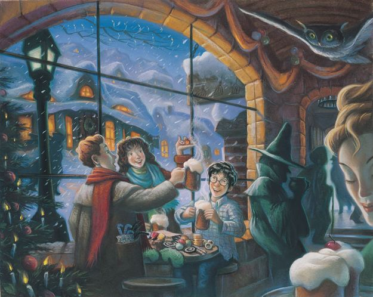

HARRY POTTER SERIES

This is the first book (and series) that got me back into reading after a long stint off books. You may have seen in my 'hobbies' sections but I spent a long time after university reading books that I thought I should be reading - for example to educate myself further, and understanding more about the world. After a while, it made me fall out of love with reading and I started to dwindle on the number of pages I was reading at the time.